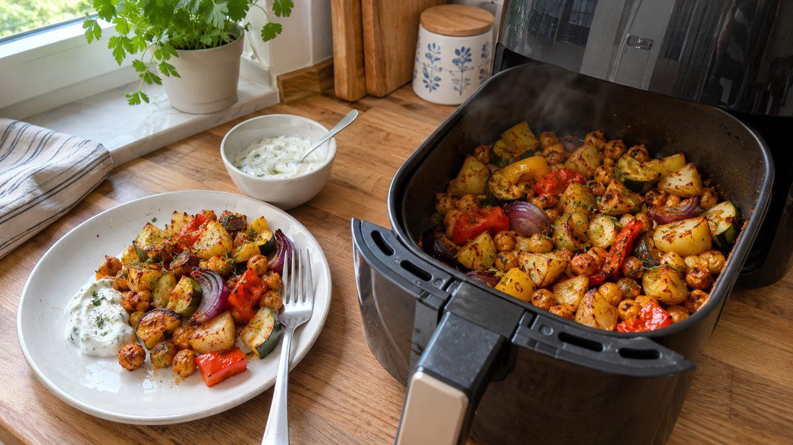

Ai dat bani pe el, iar acum stă mai mult în dulap decât pe blat.
Ai frigiderul plin de ingrediente, dar nu știi ce să pregătești.
Știi că, la sfârșitul lunii, iese scump.
Sunt scrise pentru cuptor: ies uscate, crude sau arse, și renunți.
În zilele lucrătoare gătești doar rețete de 30 de minute, cu tot cu pregătirea.
Deschizi planul la ziua de azi și urmezi rețeta. Atât.
Fiecare rețetă are costul aproximativ al porției, cu prețuri de supermarket.
De multe ori totul se gătește în același coș.
Mâncare gătită de tine, cu ingrediente pe care le alegi tu, nu ultraprocesată.
Și îți face plăcere să răspunzi.
Aproape toate rețetele pe care le vezi sunt scrise pentru aragaz și cuptor. Le încerci în air fryer și nu ies cum trebuie. Așa ajungi să-l folosești doar pentru ce știi deja.
Gust de Acasă în Air Fryer are 150 de rețete gândite de la zero pentru air fryer, cu timpul total și temperatura exactă. Sunt împărțite după timp: 30, 45 și 60 de minute.

De luni până vineri, doar rețete de 30 de minute. Miercurea și vinerea, de post. Rețetele mai lungi rămân pentru weekend.
7 cine pentru o persoană. Total estimat: ~75 lei
| Pasul | Timp | Avantaj |
|---|---|---|
| 1Deschizi planul de azi | 1minut | Planul îți spune ce gătești. |
| 2Cumperi ce e pe listă | 1dată pe săptămână | Lista de cumpărături e gata făcută. |
| 3Gătești pas cu pas | 30de minute | Timpul și temperatura sunt scrise în rețetă. |
PDF cu 150 de rețete în 3 părți: 80 de rețete de 30 de minute, 45 de 45 de minute și 25 de 60 de minute. Mic dejun, pui, porc și vită, pește, legume, gustări și deserturi.
Fiecare rețetă: timpul total, temperatura, pașii și costul porției.
Ce gătești în fiecare zi, lista de cumpărături pentru fiecare săptămână și cât costă săptămâna.
Două pagini A4 de tipărit: timp și temperatură pentru 70 de alimente, plus pagina „Ce să faci dacă…” (nu e crocant, e prea uscat, s-a ars).
Exact cum arată în PDF. Toate sunt din partea de 30 de minute.
| Piept de pui, 400 g | ~12,50 lei |
| Cartofi, 500 g | ~2,30 lei |
| Ulei, boia, usturoi praf, sare | ~1,20 lei |
| Mici din comerț (cruzi), 8 buc. | ~20 lei |
| Cartofi, 500 g | ~2,30 lei |
| Ceapă, ulei, sare, piper | ~1,50 lei |
| Somon, 2 fileuri (300 g) | ~30 lei |
| Broccoli, 400 g | ~7 lei |
| Lămâie, ulei, usturoi, sare | ~2,50 lei |
Prețuri orientative de supermarket, noiembrie 2026. Timpii pot varia puțin în funcție de modelul de air fryer; în tabelul de timpi găsești cum să-i ajustezi.
[TEXTO REAL]
[TEXTO REAL]
[TEXTO REAL]
[TEXTO REAL]
[TEXTO REAL]
[TEXTO REAL]
[TEXTO REAL]
[TEXTO REAL]
[TEXTO REAL]
30 de rețete fără carne, lactate și ouă, la fel de rapide. Ca să folosești air fryer-ul și în zilele de post.
10 aperitive gata în 30 de minute și un meniu complet pregătit pe etape, ca să faci impresie fără să stai toată ziua în bucătărie.
| Rețetarul „Gust de Acasă” (150 de rețete) | 59 lei |
| Planul pe 4 săptămâni + lista de cumpărături | 29 lei |
| Tabelul de timpi, de lipit pe frigider | 19 lei |
| Rețete de post în air fryer | 29 lei |
| Masă pentru musafiri în 30 de minute | 25 lei |
Cele două cadouri sunt incluse gratuit în comandă.
Imediat după plată primești pe email tabelul de timpi și primele 20 de rețete. Restul îl primești pe email în maximum 7 zile.
Aceasta este ediția de lansare: dacă în 7 zile nu primești tot ce ai cumpărat, îți dăm înapoi automat toți banii, iar tabelul de timpi și cele 20 de rețete rămân ale tale.
Gătește 3 rețete din prima săptămână a planului. Dacă nu sunt gata în 30 de minute sau nu-ți plac, scrie-ne un email în termen de 14 zile și îți dăm înapoi toți banii, fără alte întrebări. Tabelul de timpi rămâne al tău.
Garanție voluntară oferită de Crocant.
Da, cu orice marcă: Philips, Tefal, Cosori, Xiaomi, Ninja și altele. Timpii sunt pentru coșuri de 4–6 l, iar în tabel găsești cum să-i ajustezi pentru coșuri mai mici sau mai mari.
Da. Rețetele au pași simpli, ingrediente obișnuite, timpi și temperaturi exacte. Dacă ceva nu iese, pagina „Ce să faci dacă…” îți spune ce să schimbi.
Da, în orice supermarket. Nimic exotic.
Majoritatea, da. Dar îți lăsăm și 70 de rețete pe care le poți pregăti atunci când ai ceva mai mult timp.
Nu. Plătești o singură dată, iar PDF-ul rămâne al tău.
Imediat după plată primești pe email tabelul de timpi și primele 20 de rețete. Rețetarul complet, planul și cadourile îți vin pe email în maximum 7 zile. Este ediția de lansare: dacă în acest termen nu le primești, îți dăm înapoi automat toți banii. Verifică și folderul Spam.
Rețete, da. Dar nu un plan pe 4 săptămâni cu lista de cumpărături, costul fiecărei porții și rețete gândite de la zero pentru air fryer, cu timpul real trecut la fiecare rețetă.
Da, e PDF. Merge pe telefon, tabletă sau calculator, iar tabelul de timpi îl poți tipări pentru frigider.
150 de rețete, planul pe 4 săptămâni și costul fiecărei porții, pentru 69 lei, plătiți o singură dată.
Folosim cookie-uri ca să vedem ce reclame aduc vizite (pixelul Meta). Le pornim doar dacă ești de acord. Detalii